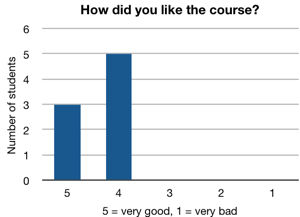
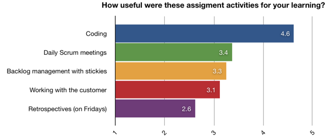

Antti Tarvainen, June 1, 2008
We organized a thirteen-day Agile Web Development course at Department of Software Systems at Tampere University of Technology in April 2008. The goal of the course was to teach students agile development and web programming in a fast-paced project with real customers.
The daily sessions started at 9:00 each morning and lasted till 16:00, with a one-hour lunch break at the middle of the day. First three days were preparation for the project assignment. On the remaining ten days, lectures and exercises were intertwined with project work.
Ten students enrolled to the course. Students were divided into five teams of two, with each team working on a separate project. By the end of the course, all teams delivered working software to their customers - albeit without deployment to production use. The customers in general were happy with the results.
We did not achieve all of the educational goals of the course. In particular, test-driven development was planned to be used in project work, but in the end was not. The technical difficulties in learning a new programming language and a new framework were higher than expected. We assessed that mandating test-driven development would cause confusion, frustrate students and interfere with learning.
Feedback from students was very positive.

We propose that the same course be given next year with a few changes. Most notably, to ease wrestling with technical issues during the project work and to allow more focus on agile programming practices, the course preparation period should be lengthened from three days to five, bringing the total length of the course to fifteen days. We also propose creation of another course “Working as a customer in an agile software project”, 1 cp.
This report describes organizing Agile Web Development (AWD) course at Department of Software Systems at Tampere University of Technology in April 2008.
The course was organized for the first time this year. The purpose of this report is to document the experiences from the course and to help decide what to do with the course next year. Since the course was novel in many ways, teachers of other courses may find this report useful as well.
In the rest of this report, we describe (a) the educational goals of the course, (b) how the course was structured to achieve those goals, (c) lecturer’s observations, (d) the feedback from students and customers, and finally (e) conclusions and changes we propose for the next year’s course.
We had two educational goals.
Agile software development is a fuzzy term that encompasses a lot of different methodologies. The different methodologies can differ a lot in practice. They do, however, share values: a core set of beliefs about what is important in software development. The difference between agile methodologies and traditional software development is the stress agile methodologies put on these values. The most widely cited description of agile values is Agile Manifesto.
In our view, values are the most important part of agile development. However, true appreciation of the values only comes with experience. Therefore the focus on this course was on teaching agile practices, not values directly.
Agile practices are methods to achieve agile values. There is a large number of them, out of which we chose a few. The priority of the course was to teach:
If the time would allow, we planned to teach these:
…
The course lasted 13 days, starting on Wednesday, April 9, 2008, and ending on Friday, April 25, 2008. The entire course was held in one computer lab. Sessions started each day at 9:00 and lasted till 16:00. There was a lunch break from 12:00 to 13:00, and shorter breaks two times a day. This totaled to roughly 13*6 = 78 hours of work. No homework was given. Passing the course required continuous or nearly continuous attendance to sessions, and finishing the project work satisfactorily.
The setting of the course emulated real-life software work in a fast-paced project. The first three days were preparation. The other two weeks were project work, divided into two one-week Scrum sprints. Project work was intertwined with lectures and exercises. The topics of the lectures were various aspects of Ruby on Rails, web development and agile development.
Ten students enrolled to the course. Five of them were Finnish students from TUT, the other five foreign exchange students. Most of the students had software development as their major subject. There was a wide range of skills, but even the worst students had good enough skills for attending, and eventually completing the course.
For a more detailed description of the course structure, see the course diary.
These are some of our experiences from the course. They are in no particular order. For lecturer’s day-to-day experiences from the course, see the course diary.
Students worked on their projects enthusiastically. I had to remind the students of the lecture breaks and even then many of them often decided to skip them. (I, on the other hand, almost never skipped a break.) On many days, some of the students continued working after 16:00. This all even when the course corresponded with the first warm sunny days of the spring.
Ruby on Rails is a good tool for learning agile web development. Agile methods prefer to spend most of the project in iterative development phase instead of planning activities. This presents a challenge to a short university course. Because of its “convention over configuration” philosophy, starting a Rails project is very fast. The time spent on making architectural choices is minimized, and the iterative phase can start on the first day of project work. Our observations on the course supported this assessment.
Using RSpec to describe Ruby exercise requirements worked well. The test-driven development tool we used on the course was RSpec. The requirements for Ruby exercises were described as RSpec test cases. This way the students got familiar with RSpec on the first day, and the barrier of learning to use the tool for test-driven development on the second day was lower.
The first week’s exercises took longer than expected. This added to the technical detail burden of the second week. The original topic plan for the preparation period was as follows:
The actual topics of the first three days were:
Students paid more attention to technical details than to following agile practices. In retrospect this is easy to understand. To finish the project, it is necessary to work out technical difficulties. Agile practices, on the other hand do not directly contribute to finishing the work.
None of the teams used test-driven development in the project work: We had originally planned to mandate test-driven development, but decided against it after the first week. Since learning the technical details took more time than planned, we assessed that the combined burden of learning technical details and starting test-driven development would be too much for the students. We gave the students a choice, and none of them decided to use test-driven development.
The teams varied a lot in their adoption of Scrum. The best team divided the customer wishes to reasonable user stories and the user stories further to individual tasks. They split their user stories to the two sprints and updated their backlogs during the sprints to follow the progress of the real work. The backlogs of the worst team didn’t have a clear distinction between stories and tasks. There was no sense of completion at the end of the first sprint, and the team didn’t update their backlogs regularly. Their backlog didn’t give a clear picture of the status of their project.
There was not enough dialogue with the customer. The team and the customer should collaborate to make the most suitable software possible. The customer knows what he wants and understands the domain area. The team understands the implementation constraints. Without good dialogue there is a danger that a wrong problem is solved, or that the solution to the problem is much more expensive than needed. On this course, there was little collaboration between the customer and the team after their initial meeting.
Student feedback was collected on the last day of the course. The feedback was collected anonymously on a feedback form. Two students couldn’t attend, so only eight students gave feedback.
General satisfaction with the course was asked with the question “How was the course?” The answers averaged 4.4 where grade 5 is “very good” and grade 1 “very bad”.
Students were asked to evaluate how much they learned about each topic. The range of answers was from 5 = very much to 1 = very little.



customer feedback
feedback from prof Bormann
The course was a partial success. Three goals were set for the course: to teach agile values, agile practices and web programming. Out of these only the last one was realized with satisfactorily. However, the student feedback from the course was very positive.
We believe that the course - implemented even as it was this year - would be a valuable addition to the department’s course palette. The course can be made still much better. Therefore, we propose that the course be given next year, but with a few changes.
We plan to make the following changes for the next year’s course.
The course will be lengthened from 13 days to 15 days. This will allow for more preparation before the actual assignment work begins. The focus of the preparation will be teaching technical details. This way the work on the assignment should feel less painful and more agile.
Our plan for the structure of the first week looks like this:
This should also give students a better chance to estimate how much they can achieve during the project, and the Scrum sprint goals will be more meaningful. The two weeks of project work will be much like they were this year, only more structured, and possibly with additional lectures about agile topics.
The use of test-driven development will be mandated. With all the other things they need to learn, this may feel painful to students at first. This is exactly the reason why students are unlikely to adopt it by themselves, and why it should be mandated.
The preparation of the sprints will be guided more carefully. This will give students a better understanding of Scrum, and help them work in a more agile way.
The software will be deployed. The first deployment is at the end of the first sprint. (The deployment can be either to a test server provided by the course or to a server of the customer.) This will give students a specific goal and help customers get what they want. Most importantly, a project can not be described as agile unless it produces working software at the end of sprints. Without deployment, software is not really working, and thus deployment must be part of the project from the very beginning.
Specific times will be set aside for customer interaction.
The project customers wished for more guidance in preparing, monitoring and steering the project. This is a reasonable request, and we therefore propose a creation of another course. The students of this course would work as customers on the Agile Web Development course. The name of the course would be “Working as a customer in an agile software project” and its size one credit point.
The course would consist of lectures, a workshop, and the project work. We would prepare The workshop would
Another reason why this course is needed comes from our experience in the software industry. The weakest link of a software project is often the customer. Many a project would benefit from having a customer who knows how to monitor progress and how he can (and cannot) help the project.
The department should recognize the importance of training software project customers. First step towards this would be creation of a course, even a small one, for this purpose.
The course was modeled after an Agile Web Entwicklung course held at the University of Bremen by prof. Carsten Bormann. In the end there were many differences between the courses.
The Bremen course is a much more intensive period, consisting of 12 days of 12 hour work, including one weekend. There were two reasons why the intensity of the Bremen course was not emulated in the Tampere course.
The Agile Web Development course was offered in two ways: (a) as an independent course and (b) in conjunction with OHJ-5100 Web Programming course. The independent course was worth 3 credit points. Passing the independent course required attendance to teaching and finishing the assignment successfully.
In conjunction with OHJ-5100, the course replaced the normal J2EE assignment, two lectures and three weekly exercises of OHJ-5100. The total course credit was 6 credit points: 4 credit points from OHJ-5100 and 2 credit points from 2 credit points from AWD. Passing the two courses required attendance to AWD teaching, successfully finishing the AWD assignment, finishing at least four OHJ-5100 weekly exercises and passing the OHJ-5100 exam.
Of the ten students enrolled to the course, nine took the course in conjunction with OHJ-5100.